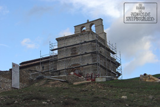

Según su información, el edificio amenazaba ruina por todas partes, la actuación se centró en consolidar los muros y la bóveda y reponer algunos sillares perdidos. Se reparan las cubiertas, recuperando la posición original de la cubierta del ábside.
La espadaña amenazaba con caer aplastando el primer tramo de la ermita. No pudo volverse a plomo de una manera perfecta, fue necesario acuñarla en la base y evitar así que volviese a inclinarse de nuevo.
Según Íñiguez Almech, un sacrificio lamentable, pero necesario, fue el de la maravillosa yedra que arruinó el ángulo noroeste de la fachada oeste; se respetó hasta última hora; pero era tal su peso que hubiese arrastrado todo de nuevo si hubiera continuado desarrollándose. No hubo otro remedio que cortarla.
-
Según palabras de este afamado arquitecto, la Ermita de San Pantaleón: "Es, pues, un edificio extraordinario, a pesar de su pequeñez, con disposiciones y tipos desusados en todo: planta, alzado, arcos y capiteles. Digno, por consiguiente, de conservarse en la forma más intacta posible, con las menores alteraciones y mínimos trastornos".
- 
{kind=link}